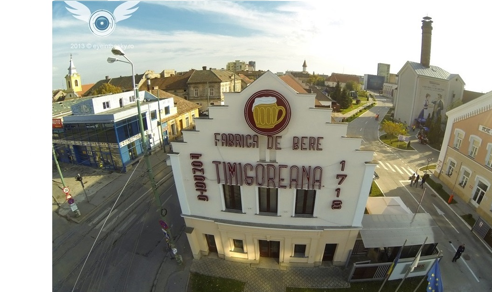
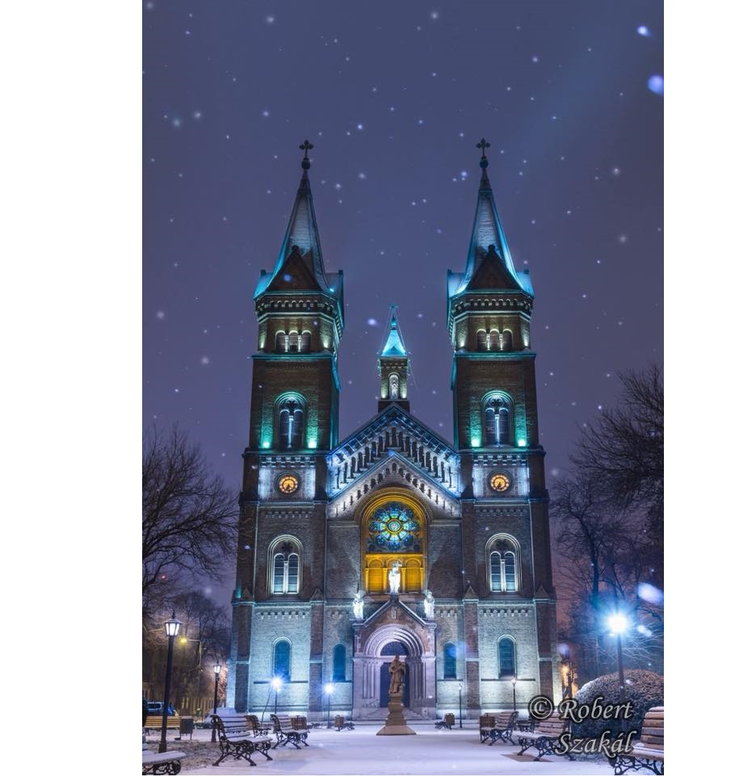
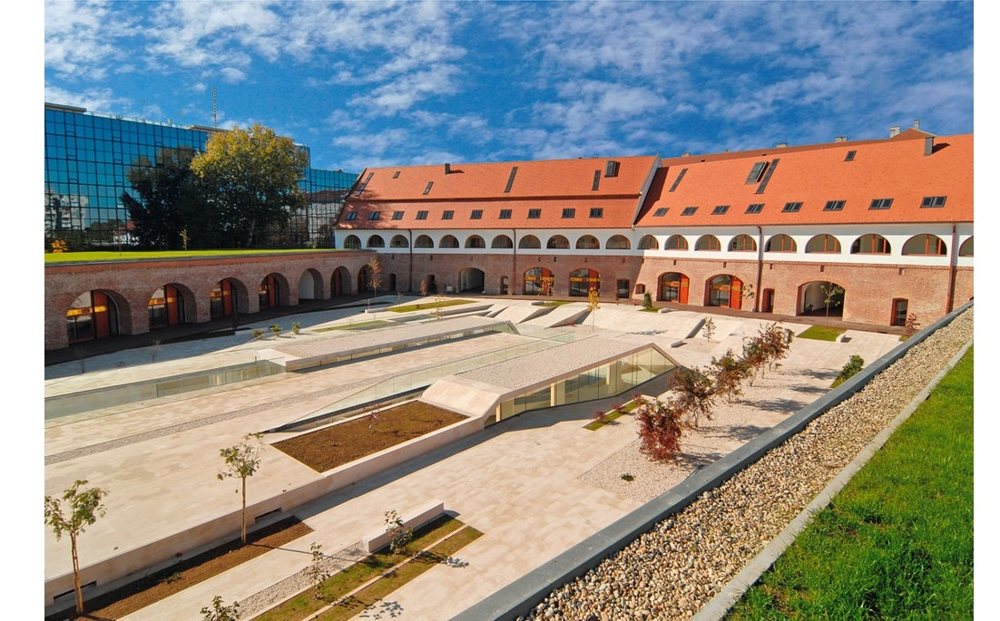
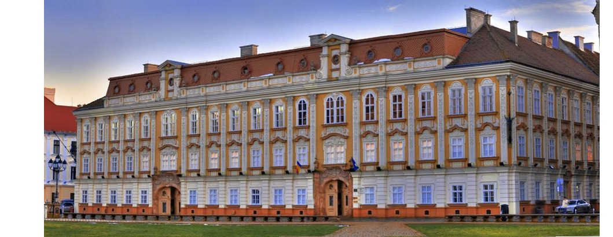
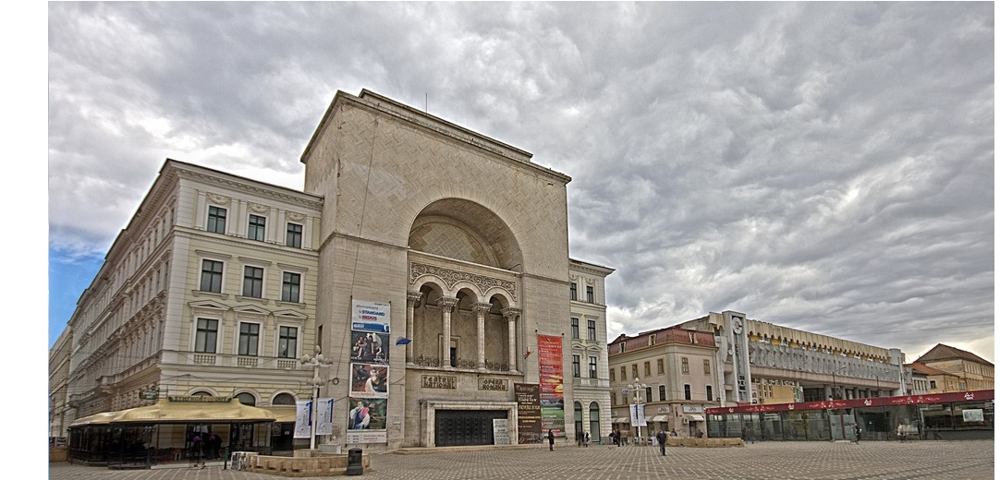

Fabrica de Bere Timisoreana

Prima fabrică de bere din România își are originile cu mult timp în urmă, fiind înființată în cetatea Timișoarei în deceniul al doilea al secolului al XVIII-lea. Primul document care atestă acest lucru a fost dat de administrația cetății și cerea construirea unei fierbătorii de bere și a unui cazan de țuică. De altfel, în același document, se interzicea aducerea berii și a țuicii din altă parte și se specifica obligația tuturor satelor din Banat de a prelua pe bază de repartiție anumite cantități din aceste produse. Această ordonanță a fost dictată de o necesitate: satisfacerea necesităților trupelor austriece, rămase după eliberarea de sub ocupația otomană, precum și pentru suplinirea lipsei acute de apăpotabilă ce a determinat și dezvoltarea unei serii de proiecte pentru alimentarea Cetății cu apă prin conducte de lemn și construirea unui turn de apă alimentat din Bega. Fierbătoria de bere a fost construită în Palancă Nouă, cartierul ce, în prezent, poartă numele de Fabric. Acest amplasament al fierbătoriei a fost dictat probabil de posibilitatea alimentării cu apa, aici existând singurele fântâni de apă potabilă bună.
Biserica Millennium

Istoric
Lăcașul a fost construit pentru cinstirea a 1000 de ani de la creștinarea regelui Ștefan I al Ungariei (de aici numele de Millennium). Construcția, în stil neoromanic, a început în 1896 și a fost terminată în 1901. Proiectul a fost realizat de arhitectul Lajos Ybl.
Biserica a fost sfințită în data de 13 octombrie 1901 de episcopul Sándor Dessewffy.
Vechea biserică parohială din Fabric a fost donată în anul 1906 către Biserica Română Unită cu Roma, Greco-Catolică.
Descriere
Biserica are două turnuri cu o înălțime de 65 de metri, cupola centrală având 45 de metri înălțime. Capacitatea lăcașului este de până la 3000 de persoane. Marele clopot are o greutate de 2420 de kilograme. Este dotată cu o orgă fabricată de meșterul Leopold Wegenstein și donată de episcopul Alexander Dessewffy.
Bastionul Theresia

Istoric
Bastionul Theresia este singurul bastion care mai există din cetatea Timișoarei din perioada apartenenței Banatului la Imperiul Austriac. Fiind singurul bastion din Timișoara, mai este cunoscut de timișoreni sub numele de Bastionul Cetății.
Bastionul a fost reabilitat în perioada 2008–2010. Înainte de reabilitare el găzduia spații comerciale, restaurante, baruri, o discotecă cu program de club de noapte, o librărie, două expoziții permanente ale Muzeului Banatului, cea de Tehnologia Informației și Comunicațiilor și "Vioara — o pasiune de o viață", precum și Secția de Etnografie a Muzeului Satului Bănățean.
După reabilitare, timp de 5 ani condițiile finanțării au stipulat obligația utilizării complexului în special pentru activități culturale, activitățile de alimentație publică fiind limitate la cafenele, cofetării și vinoteci, discoteca urmând să fie transformată într-un centru de pregătire pentru tineret.
După cucerirea în octombrie 1716 a cetății Timișoara de către armata habsburgică sub conducerea lui Eugen de Savoia s-a constatat că fortificațiile turcești nu puteau face față noilor tehnici de luptă. Ca urmare s-a luat decizia de a se reface întreaga cetate. Fortificarea s-a făcut în sistem Pagan (fr/en). Sistemul Pagan a inspirat primul dintre sistemele de fortificație preconizate de Vauban (fr/en), asemănarea dintre aceste sisteme a răspândit afirmația că Timișoara ar fi fost fortificată în stil Vauban.
Bastionul Theresia a fost primul care a fost construit. Construcția a început în 1732 imediat după ce s-au finalizat lucrările hidrotehnice de regularizare a Begăi, lucrări care s-au desfășurat în perioada 1728–1732 și care erau menite să asigure apa necesară în șanțul cetății ca ravelinul/bastionul să poată funcționa corect. El apare prima dată pe planurile din anii 1732–1733. Inițial a fost conceput ca ravelin, înconjurat de apă, situat în fața zidului (curtină) care urma să unească viitoarele bastioane Francisc și Iosef și s-a numit Ravelinul de Proviant (Ravelinul Depozitului de Alimente). Construcția lui a fost definitivată în 1733–1734. Ulterior a fost înglobat în zidul fortificațiilor, iar în 1744 a fost redenumit Bastionul Theresia, în onoarea arhiducesei Maria Terezia a Austriei.
În decursul timpului aici a fost reședința Episcopiei Romano-Catolice, apoi a adăpostit mai multe ateliere și depozite, o școală de ucenici, una de echitație, o școală de etnografie, o școală de scrimă, o tipografie, internate școlare ori Arhivele Statului. După 1970 aici au fost mutate colecțiile de etnografie ale Muzeului Banatului, un muzeu tehnic și colecțiile vechi ale Bibliotecii Județene.
La sfârșitul secolului al XIX-lea și începutul secolului al XX-lea a avut loc defortificarea orașului Timișoara. În cadrul acesteia au fost demolate aproape toate fortificațiile. Bastionul Theresia a fost singurul bastion care nu a fost demolat, motivul fiind faptul că avea pe toată lungimea lui camere, utilizabile.
Actual bastionul aparține județului Timiș, (corpurile A, B, C și E), administrate de Consiliul Județean Timiș și municipiului Timișoara (corpul D), administrat de Primăria Timișoara.
În aprilie 2018 primăria a atribuit gratuit spațiul de aproape 1400 m² din corpul D Casei de Cultură pe o perioadă de trei ani. În acest corp se vor amenaja un spațiu expozițional și unul multifuncțional, unde să poată fi organizate diverse activități culturale.
Muzeul de Arta Timisoara

Istoric
Muzeul de Artă din Timișoara este un muzeu de artă aflat în Palatul Baroc din Timișoara. Muzeul a luat ființă după desprinderea secțiunii de artă a Muzeului Banatului, care a funcționat o perioadă într-o aripă din actuala clădire. Muzeul a devenit instituție de sine stătătoare pe 1 ianuarie 2006, director fiind profesorul universitar Marcel Tolcea. O dată cu finalizarea unei bune părți din lucrările de restaurare a palatului și a spațiului expozițional, muzeul extins a putut fi inaugurat la 21 decembrie.
Muzeul include o colecție unică de lucrări și obiecte personale ale pictorului Corneliu Baba, cu 90 de piese. Alte 3 secțiuni includ colecțiile de artă contemporană, decorativă și europeană. În patrimoniul muzeului se mai găsesc colecții de pictură românească, bănățeană și pictură religioasă, acestea momentan nu sunt expuse din lipsă de spațiu. Parterul este dedicat expozițiilor temporare.
Actualul muzeu este rezultatul unui proces care a durat peste 120 de ani. Începuturile colecției - care a dat naștere secțiunii de artă a Muzeului Banatului - sunt consemnate în 1879, când Ormós Zsigmond (1813-1893), fondatorul Societății Muzeale din Ungaria de Sud, colecționar și istoric de artă, își donează colecția substanțială de pictură europeană noii instituți. În 1940 muzeul este reorganizat de directorul Aurel Ciupe, care separă secțiunile pe categorii. Astfel ia ființă Secțiunea artistică sau Pinacoteca.
În 1969 secția de artă a început să se desprindă de Muzeul Banatului, beneficiind de un spațiu propriu, în clădirea Centrului Cultural Francez. În 1986, aceasta a fost mutată într-o aripă din Palatul Baroc, în restaurare încă de la sfârșitul anilor '70. La 1 ianuarie 2006, secția de artă s-a desprins definitiv de Muzeul Banatului și a devenit "Muzeul de Artă Timișoara". Abia în 21 decembrie, o dată cu terminarea lucrărilor de renovare a palatului, s-au deschis porțile muzeului extins.
Muzeul de Arta Timisoara

Istoricul clădirii
Clădirea Palatului Culturii a fost începută în 1871, după planurile arhitecților vienezi Ferdinand Fellner și Hermann Helmer, și a fost terminată în 1875. Reprezentațiile inaugurale au avut loc la 22 septembrie 1875 (în limba maghiară) și la 25 septembrie 1875 (în limba germană).[1]
Două incendii au devastat de-a lungul timpului clădirea. Primul incendiu s-a produs în 1880, iar clădirea a fost restaurată până în 1882 în stilul original, „Renaissance”. Al doilea incendiu a avut loc în 1920 și în urma sa au rămas intacte doar aripile laterale, fațada trebuind să fie refăcută. Arhitectul Duiliu Marcu, care avea să construiască Palatul Victoria din București, a refăcut fațada și sala de spectacole în stilul neobizantin caracteristic acelui timp.